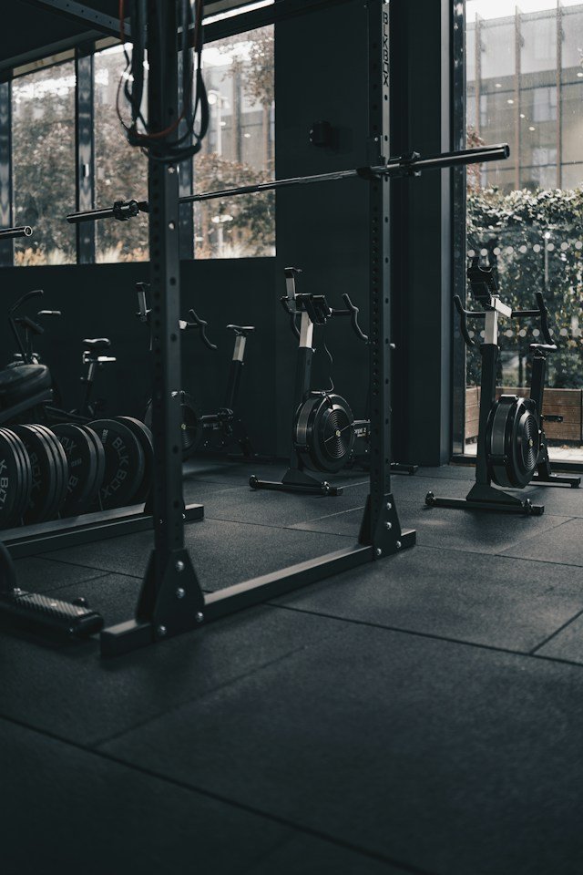
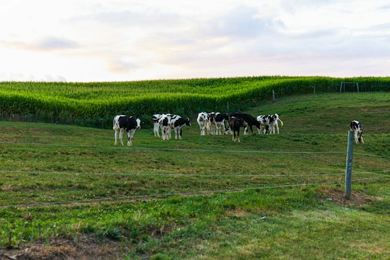
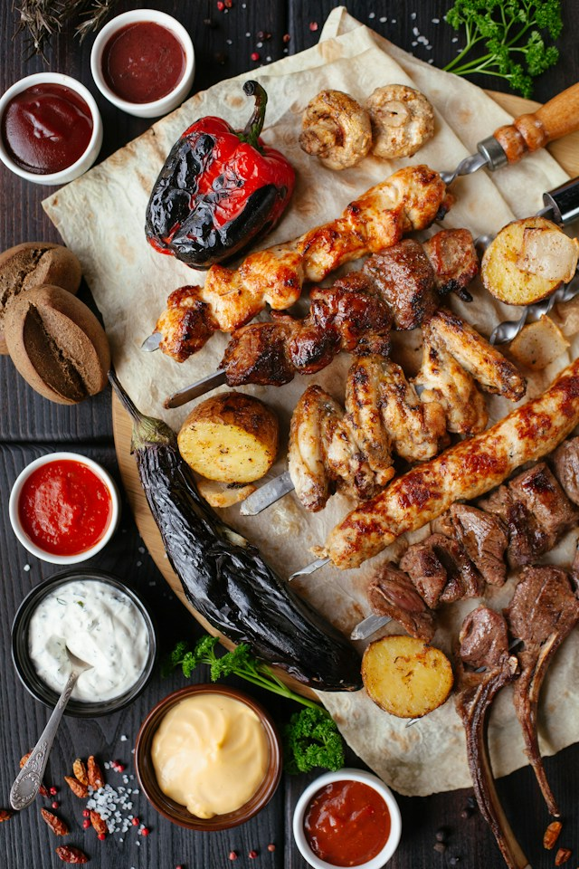

Tyngdlyftning är för mig mer än träning – det är passion, disciplin och glädje. Känslan av att greppa stången, hålla kroppen stabil och lyfta tyngre än igår är en ren dos av energi. Jag älskar processen: de små tekniska förbättringarna, tålamodet mellan seten och styrkan som växer sig starkare pass efter pass. Tyngdlyftning handlar inte bara om vikten på skivstången, utan om att utmana sig själv, vara närvarande och få känna att man blir lite starkare varje dag. Grundövningar som knäböj, bänkpress och marklyft är centrala i styrketräning, och tekniken är viktig för att utvecklas säkert.

Jag har ett stort intresse för lantbruk och den livsstil som hör till. Jag uppskattar närheten till naturen, det praktiska arbetet och möjligheten att arbeta med djur och mark. Lantbruk står för gemenskap, ansvar och hårt arbete, men också för friheten och tillfredsställelsen i att skapa något med egna händer.

Mat är för mig mer än näring – det är kreativitet, gemenskap och glädje. Att välja råvaror, doften när något puttrar på spisen och den första smakbiten är små stunder av vardagslyx. Jag älskar att experimentera med smaker och att dela en god måltid med människor jag bryr mig om. Matglädje handlar om att vara närvarande, njuta utan stress och upptäcka att även enkla rätter kan bli något alldeles extra. Att ge maten tid och dela den med andra kan göra vardagen både rikare och gladare.